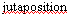
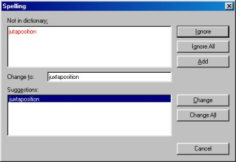

| |
| A propos Pourquoi AbiWord? Généralités Environnement SDI Vs. MDI Installation Windows Linux Intel Linux PPC BeOS Intel BeOS PPC Solaris FreeBSD Les bases #1 Les bases #2 La saisie Le formatage Les paragraphes Les tabulations Les colonnes Les sections Les styles Insertion d'objet Imprimer Rechercher / Remplacer Personnalisation Raccourcis clavier abisource.com FAQ Crédits |
La saisie "au kilomètre"Pour saisir un nouveau document, il faut commencer par lancer AbiWord comme vu précédemment. AbiWord présente alors une page vierge sur laquelle nous pouvons commencer à saisir un document. En premier lieu il faut se contenter de saisir le texte de manière brute sans se soucier de sa mise en forme, de son apparence. (c'est-à-dire, effectuer la saisie "au kilomètre"). Il suffit pour cela de taper au clavier les lettres qui composent le document et elles sont automatiquement insérées à l'endroit où se trouve le curseur d'insertion. I Ce curseur avance automatiquement d'une position à chaque frappe, comme le ferait une machine à écrire. Il faut respecter; bien évidemment, les majuscules et les espaces entre les mots. Pour introduire un nouveau paragraphe, il suffit simplement d'appuyer sur la touche "Entrée". Cependant, la touche "Entrée" sert uniquement à introduire un nouveau paragraphe et ne doit jamais être utilisée pour introduire une simple rupture de ligne. Les ruptures de lignes sont gérées par AbiWord lorsque le texte déborde de la marge de droite. C'est le principe de base de tout traitement de texte. Vous pouvez cependant ajouter un saut de ligne manuel en appuyant simultanément sur les touches "Shift" (majuscule MAJ) et "Entrée" mais cela ne constitue pas un nouveau paragraphe. La vérification automatiqueIl arrive souvent de faire des fautes de frappe lors de la saisie. Pour corriger le texte saisi, utilisez :
Si un mot ou un texte est sélectionné, la pression sur la touche "Retour Chariot" ou "Suppr" effacera tout le texte sélectionné. Lorsque qu'un mot est erroné, AbiWord souligne en rouge ce mot indiquant qu'il n'existe pas dans son dictionnaire. Comme ici par exemple pour le mot juxtaposition :  Il fait de même pour tous les mots qu'il ne connaît pas même si ceux-ci sont corrects. Pour corriger un mot souligné en rouge, il suffit de cliquer avec le bouton droit de la souris sur le mot. Un menu contextuel est alors ouvert contenant un certain nombre de suggestions. Si le mot orthographié correctement apparaît parmi les suggestions, il suffit de cliquer dessus pour que le mot erroné soit automatiquement corrigé.
Si aucune suggestion n'est proposée par AbiWord, cela signifie qu'AbiWord n'a trouvé aucun mot approchant dans son dictionnaire. Il faut alors vérifier si ce mot est bien orthographié. Si c'est bien le cas, il existe alors deux possibilités:
La dernière option (Orthographe...) lance le correcteur orthographique ci-dessous: 
Pour lancer le correcteur orthographique, il existe plusieurs solutions:
Le zoomLors de la saisie ou avant l'impression du document, il peut être intéressant de zoomer sur le document. (pour avoir une vue d'ensemble ou au contraire voir le document grossi) Pour cela il existe deux solutions:
|